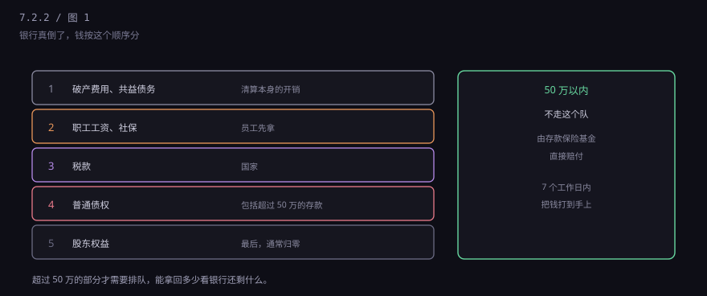
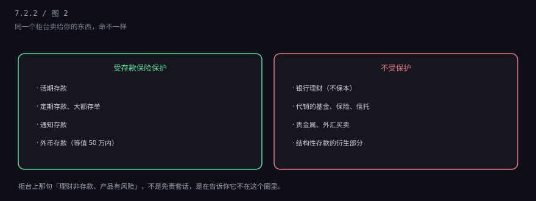
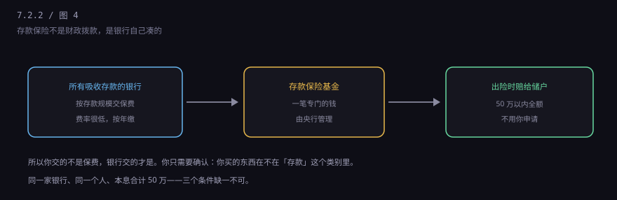

约 0.2 万字 · 4 张图 · 银行倒了能拿回多少，凭什么
你去银行存钱，银行给你一张回单。你觉得这是"保管凭证"， 像存包处给你的牌子。但法律上它不是，它是债权凭证。
区别在哪？存包处替你保管，包还是你的，它不能拿你的包去用； 银行拿到你的钱，可以拿去放贷、买债，只要到期还你本息就行。 这就是"消费寄托"和"借贷"的区别。
所以银行破产时，你的身份不是"物主取回自己的东西"， 而是债权人申报债权。这个身份的差别，在清算时非常具体： 你要排队，排在别人后面，而且不一定能拿全。
听起来有点冷，但这个认知很有用。它解释了三件事： 为什么存款利率是银行"给"你的（借钱的利息）， 为什么银行倒了要按顺序分（债权有优先级）， 为什么要有存款保险（否则普通人根本没法判断银行好坏）。
中国的《企业破产法》和《商业银行法》规定了清偿顺序。 简化成五级，从上往下分，分完为止。

第一级是清算本身的费用；第二级是职工工资和社保；第三级是税款； 第四级是普通债权——超过 50 万的存款就在这里；第五级是股东。
那 50 万以内为什么不用排队？因为有存款保险基金先垫。 2015 年包商银行被接管时，就是这套机制在实际运转： 500 多万储户的存款得到了保障，超过部分按比例受偿。
这是最实用的一段。同一个柜台、同一个客户经理、同一张单子， 卖给你的东西可能有的保、有的不保。

受保护的：活期、定期、大额存单、通知存款、外币存款（等值 50 万以内）。 它们的共同点是，在银行的账上被记为"存款"。
不受保护的：银行理财、代销的基金和保险、信托、贵金属买卖、 结构性存款里挂钩衍生品的部分。这些东西的共同点是， 它们不是存款，是"投资产品"——你买的是份额或者合约，不是债权。
一个简单的判断方法：看合同标题里有没有"存款"两个字， 看回单上写的是"存款"还是"理财申购"。 客户经理口头说的"跟存款一样"，不算。
赔付规则有六个字最关键：同一家、同一个人。
意思是：把你在同一家法人银行的所有存款合并计算， 本金加利息，50 万以内全额赔，超过部分走清算。
所以"分散存放"是有意义的：在四家银行各存 50 万，四笔都在保护圈内； 在同一家存 200 万，只有 50 万有保障。
注意"同一家法人"这四个字。一家银行在很多城市有分行， 但它们是同一个法人，存款要合并算。反过来， 一些名字相近的银行（比如某省的农商行和另一省的农商行） 是不同法人，可以分开算。
还有两个细节：一是外币存款也在保障范围内， 按赔付时的汇率折算；二是赔付很快， 规定是 7 个工作日内把资金打到储户手上，不需要你主动申请。
既然存款是借钱给银行，那利率就是"借钱的价钱"。 借得越久，价钱越高——因为你放弃了随时取用的自由。
活期利率最低（目前基准 0.2% 左右），因为它随时能取，银行不敢拿去做长期放贷。 三年、五年定期高一些，因为这笔钱锁住了，银行能安心配置。
提前支取的规则要知道：定期存款提前取，大部分银行按活期利率计息， 存了两年十个月提前取，利息可能只有几十块。有些银行有"靠档计息"的产品， 但现在这类产品已经被规范，越来越少。
还有一个反常识的点：利率不是越高越好。 一家小银行给出明显高于同业的存款利率，往往说明它更缺钱、资产端压力更大。 高息是补偿，也是信号。
很多人以为存款保险是"政府兜底"。不完全是。

机制是：所有吸收存款的银行，按存款规模向存款保险基金缴费， 费率很低（大概万分之几到千分之一量级），一年一缴。 这笔钱集中起来，由央行管理，专门用于赔付。
也就是说，是银行体系自己在给自己买保险，你一分钱不用出， 也不需要在出事时提交什么材料。这是它和商业保险最大的区别。
这个基金的存在，还有一个隐性作用：它让"银行大小"这件事变得不那么重要。 只要在 50 万以内，存大行和存小行，安全性是一样的。 这对小银行是好事，对储户也是。
第一，大额分散，但不是越散越好。 以 50 万为一条线，把大额存款分到不同法人银行。 但也没必要为了分散开十几个户，管理成本和遗忘风险也是成本。
第二，认准"存款"两个字。 柜台推荐"收益比定期高、风险很低"的产品时，问一句： 这个在账上记的是存款还是理财？受不受存款保险保护？ 看合同，不看话术。
第三，别把"银行卖的"当成"银行保的"。 银行是个超市，货架上既有自己产的存款，也有替别人代销的基金、保险、信托。 代销的东西出了事，银行不赔，因为它只是渠道。
下一节讲一件更根本的事：银行放贷的钱到底从哪来。 很多人以为是"别人的存款"，其实不是——贷款本身会创造出存款。 这是整个信用货币体系最反直觉的一环。